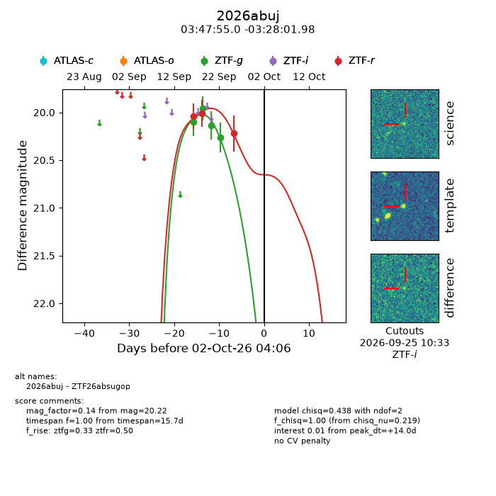
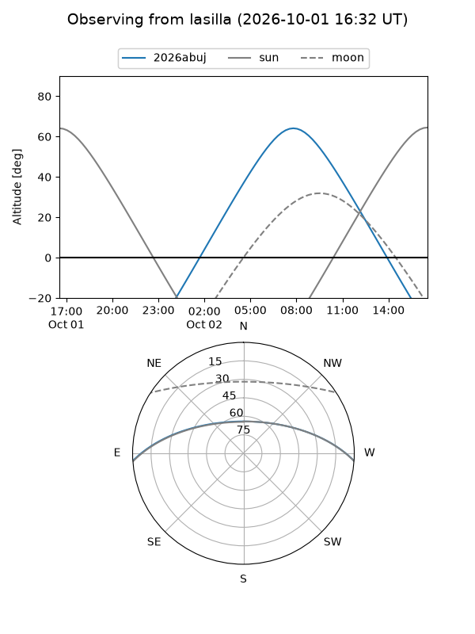
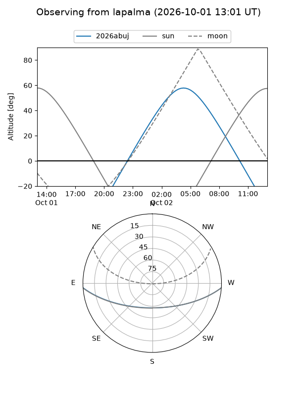
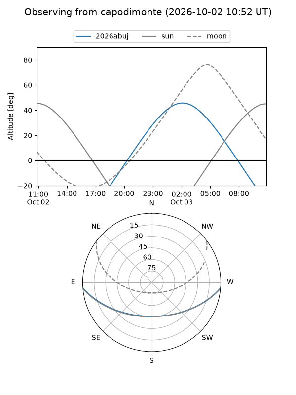
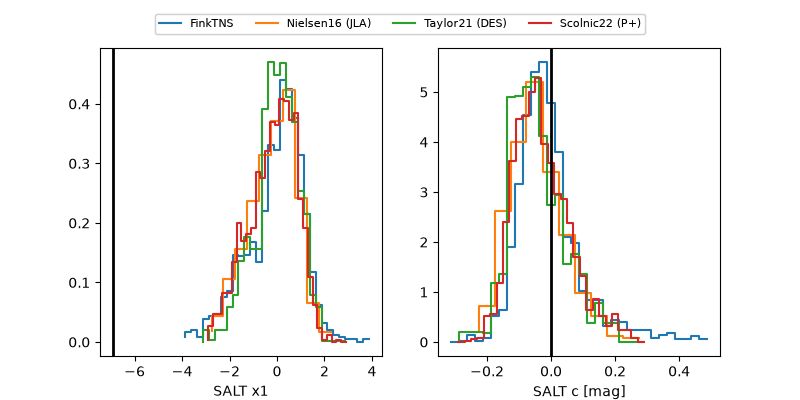

2026abuj
Target 2026abuj at 2026-10-02 15:38
Aliases and brokers:
FINK-ZTF: ztf.fink-portal.org/ZTF26absugop
Lasair-ZTF: lasair-ztf.lsst.ac.uk/objects/ZTF26absugop
ALeRCE-ZTF: alerce.online/object/ZTF26absugop
YSE-PZ: ziggy.ucolick.org/yse/transient_detail/2026abuj
TNS name: wis-tns.org/object/2026abuj
Direct TNS query: direct search
alt names
ZTF26absugop (ztf,fink_ztf)
2026abuj (tns,yse)
Coordinates:
equatorial (ra, dec) = 56.9790,-3.46722
equatorial (HMS+DMS) = 03:47:54.96,-03:28:01.98
galactic (l, b) = (191.4890,-41.70689)
Flags:
TNS type: nan
peak dt: +14.5
Photometry:
last ztfg=20.26, ztfr=20.22
4 ztfg, 3 ztfr detections
Lightcurve

Visibility



Additional plots
